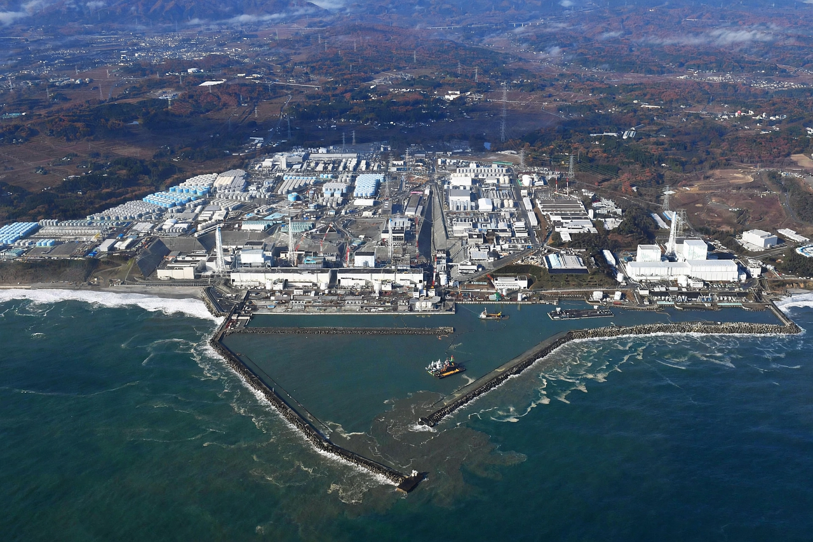

The Fukushima nuclear accident was a major nuclear accident at the Fukushima Daiichi Nuclear Power Plant in Ōkuma, Fukushima, Japan, triggered by the Tōhoku earthquake and tsunami on 11 March 2011. It was the most severe nuclear accident since Chernobyl in 1986 and is classified as Level 7 on the International Nuclear Event Scale.
The magnitude 9.0–9.1 earthquake shut down the operating reactors; a tsunami about 14–15 metres high flooded the plant, disabling emergency generators and cooling. Reactors 1–3 suffered core meltdowns, hydrogen explosions damaged reactor buildings, and radioactive material was released to air and ocean. Over 100,000 residents were evacuated.
No deaths from acute radiation exposure among the public were reported; long-term health effects are debated and monitored. Evacuation-related deaths, particularly among elderly residents, numbered in the thousands according to Japanese authorities.
Decommissioning is expected to take decades. Contaminated water accumulated in tanks; treated water (ALPS) began being discharged to the Pacific in 2023 under IAEA review, prompting regional controversy.
Japan shut down its nuclear fleet, Germany accelerated its nuclear phase-out, and safety stress tests were conducted worldwide.